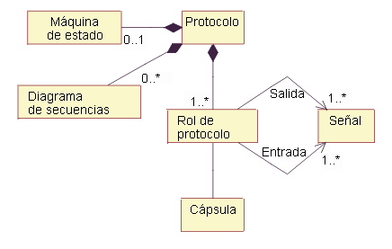

| Artefacto: Protocolo |
 |
|
| Artefacto del contenedor | ||
|---|---|---|
| Roles | Responsable: | Modificado por: |
| Tareas | Entrada a: | Salida de: |
| Uso del proceso | ||
| Descripción principal | Los protocolos permiten definir y reutilizar la especificación de un conjunto de puertos de Producto de trabajo: Cápsula. El protocolo define un conjunto de tipos de mensajes entrantes y salientes (por ej., operaciones, señales) y opcionalmente una colaboración (que habitualmente consta de un conjunto de diagramas de secuencia, consulte el apartado Directriz: Diagrama de secuencia) que define el orden necesario de los mensajes, y una máquina de estado (descrita por un conjunto de diagramas de gráfico de estados, consulte el apartado Directriz: Diagrama de gráfico de estados) que especifica el comportamiento abstracto que los participantes de un protocolo deben proporcionar. Un protocolo es una especificación de comportamiento deseado que se puede producir en un conector - una especificación explícita del acuerdo contractual entre los participantes del protocolo. Es comportamiento puro y no especifica elementos estructurales. Un protocolo incluye un conjunto de participantes, cada uno de los cuales desempeña un rol específico en el protocolo. Cada rol de protocolo se especifica con un nombre único y un conjunto de señales que recibe este rol así como un conjunto de señales que envía este rol (cualquiera de los conjuntos podría estar vacío). Como opción, un protocolo también puede tener una especificación de las secuencias válidas de comunicación; una máquina de estado puede especificar esto. Finalmente, el protocolo puede tener un conjunto de secuencias de interacción prototípicas (se pueden mostrar como diagramas de secuencia). Estas deben cumplir con la máquina de estado de protocolo, si se ha definido una. Los protocolos binarios, implican sólo a dos participantes, son los más comunes y los más sencillos de especificar. Una ventaja de estos protocolos es que sólo un rol, denominado rol base, debe especificarse. El otro, denominado conjugado, se puede derivar del rol base simplemente invirtiendo los conjuntos de señales entrantes y salientes. Esta operación de inversión se conoce como conjugación.  Composición de clase de <<protocolo>>. Tal como se ha indicado en la figura anterior, un protocolo suele contener uno o más diagramas de secuencia que ilustran las secuencias de intercambio de mensajes válidos especificados por el protocolo. El protocolo también consta de un conjunto de mensajes entrantes (solicitud) y un conjunto de mensajes salientes (respuesta). Una máquina de estado opcional se puede utilizar para especificar el comportamiento que los participantes del protocolo deben soportar. |
|---|
| Opciones de representación | Representación UML: Clase, estereotipada como <<protocolo>>. Tenga en cuenta que esta representación se basa en la notación UML 1.5. La mayor parte de esto se puede representar en UML 2.0 mediante Concepto: Clase estructurada. Consulte el apartado Diferencias entre UML 1.x y UML 2.0 para obtener más información. |
|---|
| Listas de comprobación |
|---|
© Copyright IBM Corp. 1987, 2006. Reservados todos los derechos. |